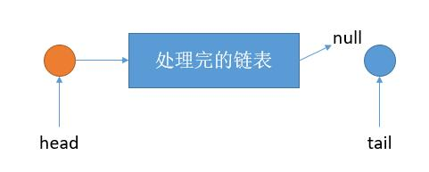

LeetCode-143-重排链表
1. 题目描述
给定一个单链表 L：L0→L1→…→Ln-1→Ln ，
将其重新排列后变为： L0→Ln→L1→Ln-1→L2→Ln-2→…
示例 1：
给定链表 1->2->3->4, 重新排列为 1->4->2->3.示例 2：
给定链表 1->2->3->4->5, 重新排列为 1->5->2->4->3.
翻译成白话：每次在链表头取一个，尾取一个，一直这样下去，且要真正操作链表，不能只改变链表中的值。
2. 思路
2.1 我的最初想法
我的第一个想法就是递归，既然每次都是头取一个尾取一个，一直这样进行下去，也就是递归的操作。于是思路大概是这样：每次，先找到链表的头尾元素（这里要扫描一遍整个链表），所以每次的时间复杂度为O（N^2）,也就是如下图所示：我也按这个思路实现了一下，执行特别慢，但也能AC，是500ms

我也按这个思路实现了一下，执行特别慢，但也能AC，是500ms.1
2
3
4
5
6
7
8
9
10
11
12
13
14
15
16
17
18
19
20
21
22
23
24
25
26class Solution {
public void reorderList(ListNode head) {
recursive(head);
}
ListNode recursive(ListNode head)
{
if(head==null)
return null;
if(head.next==null || head.next.next==null)
{
return head;
}
ListNode tail=head,tailPrev=null;
while(tail!=null && tail.next!=null)
{
tailPrev=tail;
tail=tail.next;
}
tailPrev.next=null; // 断链
tail.next=recursive(head.next);
head.next=tail;
return head;
}
}
2.2 更好的解法
其实仔细想一下可以这样做：1
2
3
4
5
6
7
8
9
10
11
12
131 -> 2 -> 3 -> 4 -> 5 -> 6
第一步，将链表平均分成两半
1 -> 2 -> 3
4 -> 5 -> 6
第二步，将第二个链表逆序
1 -> 2 -> 3
6 -> 5 -> 4
第三步，依次连接两个链表
1 -> 6 -> 2 -> 5 -> 3 -> 4
作者：windliang, 链接：(传送门)[https://leetcode-cn.com/problems/reorder-list/solution/xiang-xi-tong-su-de-si-lu-fen-xi-duo-jie-fa-by-34/]
这个思路超级巧妙，而且可以把链表中的一些基本操作全部联系起来。
- 将原始链表从中间断开 （奇偶节点数均可）。这用快慢指针即可实现。
- 将第二个链表逆序。 怎么逆序？ 遍历+头插法即可实现。
- 将第一个链表和逆序后的第二个链表归并起来。 怎么归并？ 依次遍历+最后元素挂上
再进行一下复杂度分析：
- 找中点断链时间复杂度为
O（N）
- 找中点断链时间复杂度为
- 链表逆序时间复杂度为
O（N），准确的说，为O（N/2）
- 链表逆序时间复杂度为
- 链表归并时间复杂度为
O（N），准确的说，为O（N+N/2）
总的来说，时间复杂度为O（N），空间复杂度为为O（1）
- 链表归并时间复杂度为
我感觉这个思路和这个题都是特别好的，所以记录下来。
按照这个思路实现的代码如下，清晰明了，执行时间为1ms1
2
3
4
5
6
7
8
9
10
11
12
13
14
15
16
17
18
19
20
21
22
23
24
25
26
27
28
29
30
31
32
33
34
35
36
37
38
39
40
41
42
43
44
45
46
47
48
49
50
51public void reorderList(ListNode head) {
// 1. 先把链表从中间切成两断 （快慢指针思想）
ListNode headPrev=new ListNode(-1);
headPrev.next=head;
ListNode fast=headPrev,slow=headPrev;
while(fast!=null && fast.next!=null)
{
fast=fast.next.next; // 快指针走两步
slow=slow.next; // 慢指针走一步
}
// 2. 把第二个链表逆序 （链表的头插法）
ListNode cur=slow.next;
slow.next=null; // 把第一个链表最后一个结点和第二个链表断开
ListNode curNext=null;
ListNode reversed=null;
while(cur!=null)
{
curNext=cur.next;
cur.next=reversed;
reversed=cur;
cur=curNext;
}
// 3. 把前半段链表和逆序的后半段链表合并（依次每个链表取一个值）
ListNode p=head,q=reversed;
ListNode result=new ListNode(-1); // 尾插法，一人依次挂一个结点
ListNode result_cursor=result;
while(p!=null && q!=null)
{
// 挂第一个链表的结点
result_cursor.next=p;
p=p.next;
result_cursor=result_cursor.next;
// 挂第二个链表的结点
result_cursor.next=q;
q=q.next;
result_cursor=result_cursor.next;
}
// 把第一个链表还没挂完的挂上去，其实这里肯定只会有1个结点多，
if (p!=null)
{
result_cursor.next = p;
}
// 最终结果用head保留
head=result.next;
}